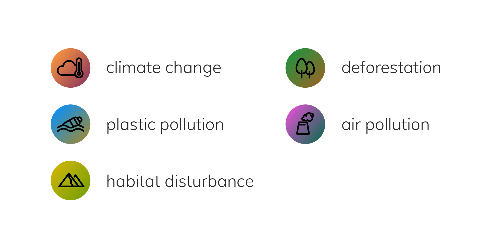

Wild Posts
Wild Posts is a platform where people create mock social media posts on behalf of other species in nature, intended to help people take the perspective of nature and build a stronger empathy with other species. I designed it as part of my master's thesis, Taking Nature's Perspective. Aside from the posting platform, the program also provides a way to help users adopt more eco-friendly behaviors.
EXPLORATION
My thesis explored how we as humans could develop a closer connection and stronger empathy with nature, which are associated with more environmentally responsible behaviors.
Environmental psychology concepts and their relationship.
Through research, I found perspective-taking to be an effective approach that helps people recognize the sentience and subjectivity of other species. As an experiment, I created a series of social media posts and conversations in the voices of non-human beings based on the problems they're facing under the environmental conditions.
I found this process to be an educational and eye-opening experience, so I wanted to see what other people would feel about it. I asked people to come up with a post on a social platform of their choice based on something they read about the natural environment. I used a Google Form to collect responses and feedback on their experience. My test users said that the process of creating the post was amusing and it allowed them to learn something they weren't aware of before.
Posts generated from test users' input and the feedback they gave.
Seeing the potential of this format in raising environmental awareness and cultivating empathy with nature, I moved on to create a platform on the web to enable posting and hosting of these posts.
ONLINE PLATFORM
I built a website with PHP and SQL that allows users to compose posts with the content that they come up with. I also included a section for recommended articles to expand the user's scope.
Main page of the Wild Posts website.
As these posts help people learn about the environmental problems that are impacting other species, it's important to include a call to action and guide people to adopt more eco-friendly habits. Since behavior change requires long-term commitment to make a difference, I went on to design a mobile app that could keep track of and nudge people’s everyday behaviors.
Based on test users' feedback and some research about people's pro-environment habits, I came up with two personas that represent the users who would be using the app.
Persona #1
Persona #2
With the posts being a entry point, I planned out a system that would guide users to form eco-friendly habits and become more psychologically connected with the ecosystem.
User Flow
APP DESIGN
App sketches
On each post, I placed an action button which links to a list of missions for each problem reflected in the posts, guiding the user to take action.
The app provides recommended missions and weekly challenges. The choice is given to the users to pick what they would be will ing to do so they could slowly build up their level of engagement.
Mission card iterations. The elements on the card are designed to show both overall progress and frequency, while offering the user a sense of satisfaction each time they carry out a task.
On each mission, there’s some information explaining the rationale and impact of this action with a link to a more elaborate article, a list of species or natural organisms whose situations would be improved by this mission, and sometimes a tip that would provide an idea on how to go about it, bringing the users a step further.
The missions are categorized by the environmental problems that they’re tackling.
The app helps users keep track of their progress and get a sense of fulfillment when they achieve a new level. Different metrics and units are used for different types of actions so each time the user makes an effort, they can see their progress directly reflected.


I designed a map showing the user’s connections to the non-human characters whose posts have triggered their reactions. On each character’s profile, the user could see the species’ information, status, and a summary of how much the user is doing to be an ecologically responsible neighbor.
On the user’s own profile page, they could also see the eco-milestones they’ve achieved and the ones they’re working towards, so they could stay motivated.
Under different circumstances, the app would also provide suggestions and reminders at actionable moments to keep the user on track of their missions.
Lessons Learned
• In order to engage the user in each stage of the experience, there needs to be a natural flow that leads the user through the transition between stages.
• When promoting certain behaviors or cultivating new habits, it's important to provide a call to action at the actionable moments. For actions that don't provide immediate and tangible feedback, it could be helpful to visualize the result and give the user some psychological fulfillment.